For ACT Students
The ACT is a timed exam...60 questions for 60 minutes
This implies that you have to solve each question in one minute.
Some questions will typically take less than a minute a solve.
Some questions will typically take more than a minute to solve.
The goal is to maximize your time. You use the time saved on those questions you
solved in less than a minute, to solve the questions that will take more than a minute.
So, you should try to solve each question correctly and timely.
So, it is not just solving a question correctly, but solving it correctly on time.
Please ensure you attempt all ACT questions.
There is no negative penalty for any wrong answer.
For JAMB and CMAT Students
Calculators are not allowed. So, the questions are solved in a way that does not require a calculator.
For NSC Students For the Questions:
Any space included in a number indicates a comma used to separate digits...separating multiples of three
digits from behind.
Any comma included in a number indicates a decimal point. For the Solutions:
Decimals are used appropriately rather than commas
Commas are used to separate digits appropriately.
Solve all questions
Show all work
(1.) A student made several mathematical statements/sentences or asked questions regarding solid geometry.
As a teacher, how would you respond?
(a.) Is a sphere a polyhedron?
Why or Why not?
(b.) How many different nets exist for the tetrahedron below?
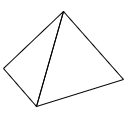
(c.) What is the minimum number of faces that intersect to form the vertices of a polyhedron?
(d.) The figure
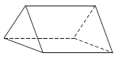
is a
rectangular prism because it has a rectangle as a base.
(e.) How many possible pairs of bases does a rectangular prism have?
(f.) The bases of all cones are circles.
(g.) The cube
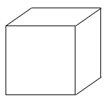
3 faces, 7 vertices, and 9 edges.
(h.) A cylinder has only one base.
(i.) The figure
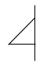
represents a card attached to a wire.
What would the figure look like if the card were revolved about the wire?
(j.) Any pair of opposite faces of a rectangular prism can be bases.
(k.) How many possible pairs of bases are there in a heptagonal prism?
(l.) The figure
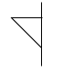
represents a card attached to a wire.
What would the figure look like if the card were revolved about the wire?
(m.) How many lateral faces does a heptagonal prism have?
(n.) The figure
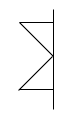
represents a card attached to a wire.
What would the figure look like if the card were revolved about the wire?
(o.) All lateral faces of an oblique prism are rectangular regions.
(p.) How many possible pairs of bases are there in a pentagonal prism?
(q.) The figure
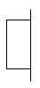
represents a card attached to a wire.
What would the figure look like if the card were revolved about the wire?
(r.) A cube has congruent edges.
(s.) Is this a net for a polyhedron?
(t.) The figure
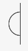
represents a card attached to a wire.
What would the figure look like if the card were revolved about the wire?
(u.) Any pair of opposite faces of a rectangular prism can be bases.
(v.) Is this a net for a polyhedron?
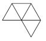
(w.) All regular polyhedra are convex.
(x.) The figure
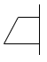
represents a card attached to a wire.
What would the figure look like if the card were revolved about the wire?
(y.) Why does a non-face diagonal of a cube have to be longer than the diagonal of a face of a cube?
(z.) The figure
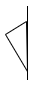
represents a card attached to a wire.
What would the figure look like if the card were revolved about the wire?
(a.) A sphere is not a polyhedron because its surface does not consist of polygonal regions.
(b.) The polyhedron has two nets.
(c.) The minimum number of faces that intersect to form the vertices of a polyhedron is 3 faces.
This is because if there was one less face, then the shape would not be closed and would not form a closed surface.
(d.) The student is assuming that the rectangle is a base.
However the bases of a prism must be two congruent, parallel faces.
Hence, it is not a rectangular prism.
It is a triangular prism.
(e.) A rectangular prism has three possible pairs of bases.
Each pair of parallel faces could be considered bases.
(f.) This is not true because the base can be any simple closed curve.
(g.) Based on the parts of the cube that is seen physically, the cube has 3 faces, 7 vertices, and 9 edges.
However, a cube has 6 faces, 8 vertices, and 12 edges.
(h.) This is not true.
A cylinder has two bases.
(i.) A cone:
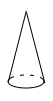
(j.) This is correct.
(k.) There is 1 possible pair of bases because only 2 bases lie in parallel planes.
(l.) An upside-down cone:
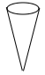
(m.) A heptagonal prism has 7 lateral faces because there is one lateral face for each side of the base.
(n.) An hourglass:
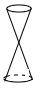
(o.) This is not true.
The lateral faces of an oblique prism are parallelograms that are not rectangles.
(p.) There is 1 possible pair of bases because only 2 bases lie in parallel planes.
(q.) A cylinder:
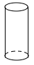
(r.) This is correct.
(s.) Yes, it is a net because the pattern can be used to construct a polyhedron.
(t.) A sphere:
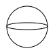
(u.) This is correct.
(v.) No, it is not a net because there are not enough sides to construct a polyhedron.
(w.) This is correct.
(x.) Truncated cone:
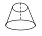
(y.) The non-face diagonal is the hypotenuse of a right triangle
The diagonal (a face) is a leg of the right triangle.
(5.) Can either or both of the following figures be drawings of a quadrilateral pyramid?
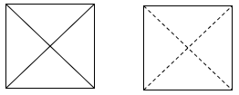
(a.) Can the first figure be a drawing of a quadrilateral pyramid?
If yes, where would you be standing in each case? Explain why.
(b.) Can the second figure be a drawing of a quadrilateral pyramid?
If yes, where would you be standing in each case? Explain why.
(a.) The first figure be a drawing of a quadrilateral pyramid.
You would be standing directly above the pyramid.
(b.) The second figure be a drawing of a quadrilateral pyramid.
You would be standing directly below the pyramid.
(6.) A circle can be approximated by a many-sided regular polygon.
Use this notion to describe the relationship between each of the following.
(a.) A pyramid and a cone
(b.) A prism and a cylinder
(a.) A cone can be approximated by a many-sided pyramid.
(b.) A cylinder can be approximated by a many-sided prism.
(7.)
(8.)
(9.) The following is a picture of a right rectangular prism.
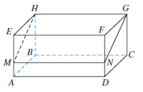
M and N are points on two edges such that $\overline{MN}$ ∥ $\overline{AD}$
(a.) Is HGNM a rectangle or a parallelogram that is not a rectangle?
(b.) If vertex H is connected to each of the vertices A, B, C, and D, a rectangular pyramid is formed.
Is it a right regular pyramid?
(a.) HGNM is a rectangle.
By definition, $\overline{MN}$ is $\perp$ to the plane AEHB.
Hence, $\overline{MN} \perp \overline{MH}$ and $\angle NMH$ is a right angle.
Similarly, the other angles in HGNM are right angles.
(b.) No, because the edges that extend from the base are not the same length.
(10.) In these stacks of solid cubes, determine the:
(I.) Number of cubes in the stack
(II.) Number of faces that are glued together.
(a.)
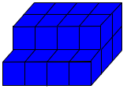
(b.)
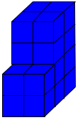
(c.)
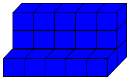
(d.)
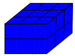
(e.)
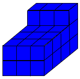
(f.)
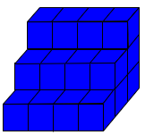
(g.)
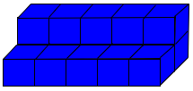
(h.)
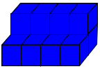
(i.)
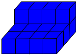
(a.) 20 cubes
70 faces glued together
(b.) 20 cubes
72 faces glued together
(c.) 20 cubes
62 faces glued together
(d.) 18 cubes
66 faces glued together
(e.) 27 cubes
102 faces glued together
(f.) 24 cubes
84 faces glued together
(g.) 15 cubes
44 faces glued together
(h.) 12 cubes
34 faces glued together
(i.) 16 cubes
48 faces glued together
(11.)
(12.)
(13.) Each net given below forms a three-dimensional figure.
Identify the three-dimensional figure.
(a.)
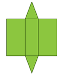
(b.)
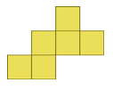
(c.)
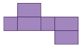
(d.)
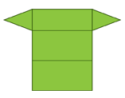
(e.)
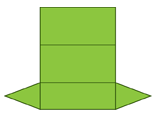
(f.)
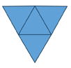
(g.)
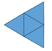
(h.)
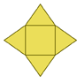
(a.) Triangular Prism
(b.) Cube
(c.) Rectangular Prism
(d.) Triangular Prism
(e.) Triangular Prism
(f.) Triangular Pyramid
(g.) Triangular Pyramid
(h.) Square Pyramid
(i.)
(14.) Describe the cross section of these figures.
(a.)
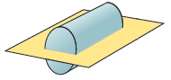
(b.)
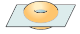
(c.)
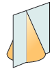
(d.)
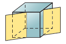
(e.)
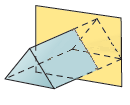
(a.) The cross section is a rectangle.
(b.) The cross section is a donut.
(c.) The cross section is a triangle.
(d.) The cross section is a rectangle.
(e.) The cross section is a triangle.
(15.) WASSCE The curved surface areas of two cones are equal.
The base radius of one is 5cm and its slant height is 12cm
Calculate the height of the second cone if its base radius is 6cm
(19.) The right hexagonal prism shown below has regular hexagons as bases.
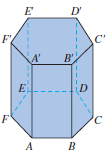
(a.) Name all the pairs of parallel lateral faces.
(Faces are parallel if the planes containing the faces are parallel.)
(b.) What is the measure of the dihedral angle between two adjacent lateral faces? Why?
(a.) The parallel faces are Quadrilaterals:
(I.) AFF'A' and DCC'D'
(II.) BAA'B' and EDD'E'
(III.) CBB'C' and FEE'F'
(b.) The measure of the angle is 120° because this is the measure of an interior angle of a hexagon, which is where the two planes representing the lateral faces intersect.
(24.) A right circular cylinder has an 8-in. diameter, is 5 in. high, and is completely full of water.
Design a right rectangular prism that will hold almost exactly the same amount of water.
Choose the correct option. A. A prism with dimensions 64 in. × 5 in. × π in. will work because it has approximately the same volume. B. A prism with dimensions 16 in. × 5 in. × π in. will work because it has approximately the same volume. C. A prism with dimensions 8 in. × 8 in. × 5 in. will work because it has approximately the same volume. D. A prism cannot be designed to match a cylinder.
$
\underline{Right\;\;Cylinder} \\[3ex]
d = 8\;in \\[3ex]
h = 5\;in \\[3ex]
V = \dfrac{\pi d^2h}{4} \\[5ex]
V = \dfrac{\pi * 8^2 * 5}{4} \\[5ex]
V = \dfrac{\pi * 64 * 5}{4} \\[5ex]
V = 80\pi \;in^3 \\[5ex]
$
Let us try each option.
But we shall stop when we get the correct option.
$
\underline{Right\;\;Rectangular\;\;Prism} \\[5ex]
Option\;A \\[3ex]
l = 54\;in \\[3ex]
w = 5\;in \\[3ex]
h = \pi\;in \\[3ex]
V = l * w * h \\[3ex]
V = 64 * 5 * \pi \\[3ex]
V = 320\;\pi\;in^3 \\[3ex]
320\;\pi \ne 80\pi \\[3ex]
Not\;\;the\;\;correct\;\;option \\[5ex]
Option\;B \\[3ex]
l = 16\;in \\[3ex]
w = 5\;in \\[3ex]
h = \pi\;in \\[3ex]
V = l * w * h \\[3ex]
V = 16 * 5 * \pi \\[3ex]
V = 80\;\pi\;in^3 \\[3ex]
80\;\pi = 80\pi \\[3ex]
$
B. A prism with dimensions 16 in. × 5 in. × π in. will work because it has approximately the same volume.
(25.) Name the polyhedron that can be constructed using the flattened polyhedron.
(a.)
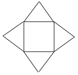
(b.)
(c.)
(d.)
(a.) The polyhedron that can be constructed is a right square pyramid.
(b.) The polyhedron that can be constructed is a right hexagonal pyramid.
(c.) The polyhedron that can be constructed is a right hexagonal prism.
(d.) The polyhedron that can be constructed is a right pentagonal pyramid.
(e.)
(f.)
(26.) Given the tetrahedron:
Name the:
(a.) Vertices
(b.) Edges
(c.) Faces
(d.) Intersection of face NMQ and edge $\overline{QL}$
(e.) Intersection of face NMQ and face GJL.
(d.) The intersection of face NMQ and edge $\overline{QL}$ is Q
(e.) The intersection of face NMQ and face GJL is an empty set, φ
(27.) WASSCE A container, in the form of a cone resting on its vertex, is full when 4.158
litres of water is poured into it.
(a.) If the radius of its base is 21cm,
(i.) represent the information in a diagram;
(ii.) calculate the height of the container.
(b.) A certain amount of water is drawn out of the container such that the surface diameter of the water
drops to 28cm.
Calculate the volume of the water drawn out.
$\left(Take\:\:\pi = \dfrac{22}{7}\right)$
(29.) (a.) Draw a right pentagonal prism with bases ABCDE and A'B'C'D'E'
(b.) Name all the pairs of parallel lateral faces.
(Faces are parallel if the planes containing the faces are parallel.)
(c.) What is the measure of the dihedral angle between two adjacent lateral faces?
(a.) The right pentagonal prism with the bases ABCDE and A'B'C'D'E' is:
(b.) There are no parallel lateral faces in a right pentagonal prism.
(c.) The measure of the angle is 108° because this is the measure of an interior angle of a regular pentagon.
$
\underline{Pentagon} \\[3ex]
Sum\;\;of\;\;interior\;\angle s \\[3ex]
= 180(5 - 2) \\[3ex]
180(3) \\[3ex]
540^\circ \\[5ex]
Each\;\;interior\;\angle \\[3ex]
= \dfrac{540}{5} \\[5ex]
108^\circ
$
(30.) Nets for three-dimensional objects are provided.
(a.)
(b.)
(c.)
(d.)
(e.)
(f.)
(g.)
Which objects will the nets fold to make?
(a.)
(b.)
(c.)
(d.)
(e.)
(f.)
(g.)
(31.)
(32.)
(33.) Using a 25-sided polygon as a base, complete the table.
Polyhedron
Number of Faces
Number of Vertices
Number of Edges
Pyramid
.......
26
.......
Prism
27
.......
75
(1.) For a Pyramid whose base has n sides: (n-sided Pyramid)
Number of faces: F = n + 1
Number of vertices: V = n + 1
Number of edges: E = 2n
(2.) For a Prism whose base has n sides: (n-sided Prism)
Number of faces: F = n + 2
Number of vertices: V = 2n
Number of edges: E = 3n
25-sided polygon ⇒ n = 25
Polyhedron
Number of Faces, F
Number of Vertices, V
Number of Edges, E
Pyramid
n + 1
25 + 1
26
26
2n
2(25)
50
Prism
27
2n
2(25)
50
75
Euler's Formula: F + V − E = 2
Pyramid: 26 + 26 − 50 = 2 ✓
Prism: 27 + 50 − 75 = 2 ✓
(34.) A soccer ball resembles a polyhedron with 32 faces made up of 20 regular hexagons and 12 regular pentagons.
How many vertices are there?
Let:
Number of edges = E
Number of faces = F
Number of vertices = V
20 hexagons of 6 sides each = 20(6) = 120 sides
12 pentagons of 5 sides each = 12(5) = 60 sides
Total sides for both polygons = 120 + 60 = 180 sides
However:
Each edge of the soccer ball is shared by two polygons.
⇒
$
E = \dfrac{1}{2} * 180 \\[5ex]
E = 90\;edges \\[5ex]
F = 32\;faces...Given \\[3ex]
F + V - E = 2...Euler's\;\;Formula \\[3ex]
V = 2 - F + E \\[3ex]
V = 2 - 32 + 90 \\[3ex]
V = 60 \\[3ex]
$
The polyhedron has 60 vertices.
 Formulas:
Formulas: